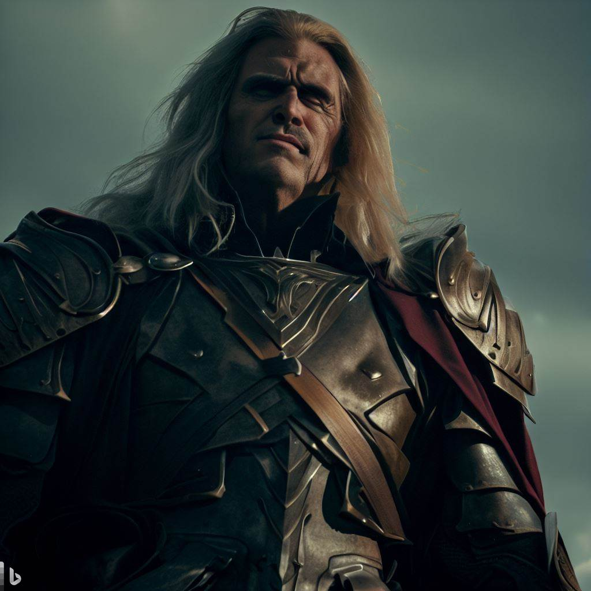

A lenda do Rei Arthur conta a história de um lendário rei britânico que governou na Idade Média. Arthur nasceu de uma linhagem nobre, mas foi criado em segredo pelo mago Merlin para protegê-lo. Quando jovem, Arthur retirou a Espada na Pedra, revelando assim sua identidade como o futuro rei. Mais tarde, Arthur recebeu a lendária espada Excalibur da Dama do Lago, uma figura mística associada à magia. Com o apoio de seus leais cavaleiros da Távola Redonda, como Lancelot, Gawain e Percival, Arthur buscou unir a Inglaterra dividida e estabelecer uma era de justiça e paz. A lenda do Rei Arthur é repleta de elementos como coragem, honra, cavalaria, amor e traição, tornando-a uma das histórias mais amadas da literatura ocidental. A seguir, vídeo, personagens e detalhes da lenda serão abordados.
Sob a liderança de Arthur, Camelot prosperou como uma utopia, onde os ideais de cavalaria, honra e bondade eram primordiais. No entanto, a perfeição de Camelot foi abalada pela traição. Lancelot, envolvido em um caso de amor com Guinevere, esposa de Arthur e rainha de Camelot, traiu a confiança do rei. Essa traição levou a conflitos e desavenças que enfraqueceram o reino.

-
Rei Arthur
O Rei Arthur é retratado como um líder nobre e justo, conhecido por seus princípios e valores. Ele personifica a ideia do rei ideal, cujo objetivo principal é proteger seu povo e estabelecer a paz e a justiça em seu reino.
-
Mago Merlin
Mago Merlin é uma figura icônica na lenda do Rei Arthur. Ele é retratado como um poderoso mago, sábio e misterioso. Seus conhecimentos de magia são lendários, e ele é capaz de conjurar feitiços poderosos e realizar feitos impressionantes. Além de suas habilidades mágicas, Merlin é conhecido por suas profecias. Ele tem o dom de prever o futuro e a capacidade de orientar Arthur em suas decisões importantes. Sua sabedoria e visão estratégica o tornam um conselheiro inestimável para o rei e para os cavaleiros da Távola Redonda.
-
Sir Lancelot
Sir Lancelot é conhecido por sua coragem inabalável e habilidades de combate excepcionais. Sua destreza na espada e sua perícia na batalha são lendárias, tornando-o um adversário formidável em qualquer confronto. Além de suas habilidades marciais, Lancelot é caracterizado por sua lealdade e honra. Ele é um cavaleiro nobre, sempre disposto a proteger os mais fracos e a lutar pela justiça. Sua devoção a Arthur é inigualável, e ele é um dos mais confiáveis e valorosos membros da Távola Redonda, porém, seu envolvimento romântico inverte a situação.
-
Mordred

Mordred é retratado como um vilão traidor, cujas ações desencadeiam a queda do reino de Arthur. Mordred é conhecido por sua astúcia maligna e sua ambição desmedida. Ele é filho ilegítimo de Arthur, resultado de um caso com sua meia-irmã Morgana. Essa relação familiar complexa alimenta o ressentimento e o desejo de poder de Mordred. Ele conspira contra Arthur para usurpar o trono e assumir o controle da Grã-Bretanha.
-
Morgana
Ela é retratada como uma poderosa feiticeira com habilidades mágicas sombrias e conhecimento oculto. Morgana é frequentemente associada à magia negra e à bruxaria.Sua relação com Arthur é complexa e marcada por conflitos. Morgana nutre ressentimento e inveja em relação ao rei, alimentando seu desejo de poder e vingança.Morgana também é conhecida por seu envolvimento com Mordred, seu filho ilegítimo com Arthur. Essa relação familiar complicada adiciona uma camada adicional de tensão à lenda,pois, Morgana cria Mordred com a intenção de usá-lo como uma ferramenta para seus próprios propósitos e para desestabilizar o reinado de Arthur.
A Excalibur é uma lendária espada da mitologia britânica, mais conhecida por sua associação com o Rei Arthur. Ela é retratada como uma poderosa arma mágica com propriedades extraordinárias. Acredita-se que a Excalibur tenha sido forjada em uma forja mística e imbuida com poderes divinos. Seus principais poderes incluem conceder invencibilidade ao seu portador, cortar qualquer coisa e ser indestrutível. Além disso, a lenda diz que a espada só pode ser empunhada por aqueles que são dignos e destinados a serem reis. A Excalibur simboliza a justiça, a nobreza e a responsabilidade do governante, tornando-a uma das armas mais icônicas e reverenciadas na mitologia.